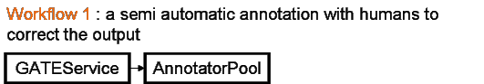
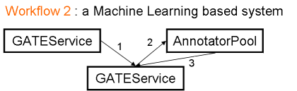

Note: this is out of date and needs revising!
This documents contains developer notes for SAFE and describes the different components of the SAFE architecture. For an overview of SAFE and its applications see ./gleam-reqs.html. SAFE will be based on a Service Oriented Architecture (SOA) with different modules communicating via Web Services.
The SAFE architecture will be made of several modules communicating with each other, as showed on the following figure:
The schema above splits the architecture of SAFE into 3 tiers:
In the user GUIs part, the green boxes correspond to user interfaces used by different profiles of actors (see ./gleam-reqs.html).
The core SAFE is made of several modules which communicate via web services, the description of which will be given in annex of this document.
Finally, the application realm uses the data generated by SAFE and located in a DocService or/and in an Ontology Service. These data could be converted and used directly by an instance of a KIM Server, in which case one could for instance reuse the functionalities of the KIM web clients.
Note: we should also look at including material from OLLIE: Tab03a, http://gate.ac.uk/sale/hlt03/ollie-sealts.pdf.
The basic concept of MI approaches is to start with a model which is learnt from some initial annotations and keep updating the model with new user annotations. The procedure continues until it reaches a specific accuracy threshold. Then it is the trained model which generates new annotations for unseen documents and shows them as suggestions to the annotators. Annotators then accept or discard, add new or correct the existing ones. The model gets updated with the provided feedback and thus generates annotations with increasing accuracy with each subsequent attempt.
But the process itself is very complicated and there are several issues to be addressed. The following list highlights some of such issues:
The following sections summarise some of the systems which are relevant to the discussion. Some of the points raised in the above list are discussed with new thoughts of improving such systems.
Alembic: The main goal of the Alembic workbench is to provide a natural language engineering environment for the development of tagged corpora. When users, after annotating documents, submit their annotations to the system, the underlying rule based system (Alembic text processing system), tries to induce new rules from the context of these annotations. The learned rules are then presented in a human readable format. During the annotation session, users are allowed to alter or remove these rules. They are also allowed to introduce new manual rules. The analysis of such rules and to monitor their effects on the corpus, the workbench provides a set of corpus analysis tools (not listed any at the moment). The outcome of annotating documents within the alembic workbench is a domain-specific training set that has been acquired with minimum human effort, a set of information extraction/annotation rules for annotating unseen data and a better understanding of the data through the use of corpus analysis techniques.
Callisto: Callisto is a new annotation tool from MITRE which is being developed as part of the Alembic Workbench. It provides an environment for annotating documents aimed at different tasks (e.g. co-reference annotations, part of speech tagging etc). For each new session, the system asks users to choose one of the tasks for which s/he wants to annotate the documents. Based on the user’s choice, the relevant environment settings are loaded. For example to annotate tokens in a document with their POS information user is provided with a list of POS tags and s/he’s asked to choose one of the values (something similar to our annotation schemas).
The paper titled “Active Learning for Part-of-Speech Tagging: Accelerating Corpus Annotation” gives a very good explanation of the concept of Active Learning. They explain how they learn a POS tagger using MEMM and how does the active learning help them to accelerates the efficiency of a human annotator even with a small amount of training and data. They explain what data should be considered for training a model and for what data the users should be asked for their feedback on. In order to determine what sentences provide more information and should be used for training, they experiment with various policies - Query by Committee (QBC), Query by Uncertainty (QBU) (may be some one needs to explain me this in details L), and their variants - QBUV (viterbi), QBCV, Weighted QBC and Weighted QBV. They show that QBUV is a cheap approach to active learning, but QBU performs best when a small amount of data is available (more details in their paper). They explain that active learning is an approach to machine learning in which a model is trained with the selective help of an oracle. The oracle provides labels on “tough” cases, as identified by the model. Easy cases are assumed to be understood by the model and assumed to require no additional annotation by the oracle.
Amaya: Amaya is an annotation tool created under the Annotea project. The main difference is in the way they store annotations which allows users work offline. They store annotations separate from the actual document content. It can be saved either on a server or on a local file system. They use a special RDF annotation schema to store these annotations. For each annotation they store, at least, its location (e.g. local file system or annotation server), scope (e.g. if it is applicable to the entire document or a piece of text), annotation type (e.g. if it is an annotation, comment or query) and the author. Initially annotations are stored on a local system, which can then be copied over to the server if user instructs to do so. When a document is loaded, annotations from the local file are loaded automatically and user is given an option to show annotations or get relevant annotations from the server. Amaya allows changing annotation boundaries within the document. It is a three clicks drama where user first places a cursor where s/he wants to move annotations and saves it as a stored location and then selects the annotations and clicks to move to the stored location. This moves all the selected annotations to the stored position.
S-CREAM: S-CREAM stands for Semi-automatic CREATion of Metadata. From the first read it looks very similar to the ALEMBIC workbench. The most similar things are their architecture and the approach for inducing new rules. S-CREAM is an annotation framework that integrates a learnable information extraction component (Amilcare). Amilcare is a tool for adaptive IE from text designed for supporting active annotation of documents for KM. The workflow of the S-CREAM processing is as below: User annotates the documents manually with the given ontology. The information about new entities found in the document (using the learnt rules from previous training) is extracted. Finally, anaphora resolution among the found entities and the establishment of new logical relationships among the entities is derived as part of the discourse resolution phase.
Rule induction: Its learners induce rules that are able to reproduce the text annotation. They use Ont-o-Mat to allow users to create manual annotations. The learner starts inducing wrapper like rules that make no use of linguistic information where rules are sets of conjunctive conditions on adjacent words. Then the linguistic information provided by ANNIE is used in order to generalise rules: conditions on words are substituted with conditions on the linguistic information (e.g. conditions matching either the lexical category, or the class provided by the gazetteer etc.). All the generalizations are tested in parallel by using a variant of the AQ algorithm and the best k generalizations are kept for IE. The learner induces two types of rules (tagging rules and correction rules). Tagging rules add mark-ups to the document where as correction rules decide the correct positions of these mark-ups if needed. Similar to Alembic, they also allow users to make modifications to these rules and in addition they allow balancing precisions and recall.
Annotation framework: CREAM allows generation of annotation in three different modes (Note: from paper the last two looked almost same). Firstly, annotations by typing statements - this involves working almost exclusively with the ontology browser and the fact templates and filling up the information where required. Secondly, annotation by marking up - this involves loading data in document editor, marking parts of the document and then drag and dropping them on the ontology. I think, what they mean here is that they also allow adding new instances and classes to the ontology. Finally, annotation by authoring web pages - this involves the reuse of data from the ontology and the fact browser in the document editor by drag and drop. I think, they only allow clicking on the existing instances and classes in the ontology and not adding new resources. It embeds resulting tags in the HTML file itself but can be stored separately in a file or database. They support three annotations mode: 1) Highlighting mode - all annotations are highlighted in a single click and user is given an option of accepting or rejecting the annotation 2) Interactive mode - one by one annotation is highlighted and on each highlight user is asked to either accept or reject the annotation before proceeding to the next suggestion and 3) Automatic mode - this is something similar to batch learning (a bunch of documents is processed altogether) except that when user edits these documents, a feed back is sent back.
Setting up a new task: S-CREAM is for training a model or learning rules for a specific domain (user can choose which domain) and therefore user has to provide an ontology + a set of web-pages specific to that domain for the training purpose (and for manual annotation purpose) and a subset of ontology concepts to be learned.
Knowtator: Knowtator is a Protégé plug-in for annotating documents in order to prepare a gold standard data. It provides an editor to create annotation schemas, which can be later used while creating annotations. They allow various annotators to annotate the same document simultaneously, and when they all submit annotations back, the annotations in common are considered as consolidated annotations and the rest are considered or shown to the user for further reviewing. They provide the detailed analysis of which users agree/or don't agree on what features of what annotations via Inter-annotator agreement metrics. They have implemented several match criteria (to be investigated later) (i.e. what counts as agreement between multiple annotations). The report based on this reveals the systematic differences. They allow saving data (along with annotation) or only the annotations separately in a file with the choice of annotations to be exported.
In the paper titled “Knowledge Extraction by using Ontology based Annotation Tool”, they describe an approach where the user is presented with a set of possible tags which could be used during the mark-up process. They use a system called Crystal to learn new rules. Crystal works using the bottom-up approach and finds rules for specific instances and generalises them. Crystal takes similar instances and generalises them into a more general rule by preserving the properties from each of the instance definitions. Using these rules, the Crystal locates the entities of interest in the document, which automatically become candidates for the annotations. For example, from patterns "John visits IBM" and "Bill visits Microsoft", Crystal learns a pattern "X visits Y" and if "John" and "Bill" were annotated as Visitor and IBM and Microsoft were annotated as Organization, Crystal creates a pattern "Visitor visits Organization". They use Badger to fill up these templates. Badger considers one sentence at a time and tries to fill up these templates. Finally they do reasoning over ontology to find answers to the question such as which person visited Microsoft. In order to do that, they have a sub class called Visitor of the class called Person. From the template Visitor visits Organization, they know that Bill is a visitor, but they check if visitor is a subclass of Person. If found any pattern, they say that Bill is a person who visited the Microsoft.
Thoughts
Post editing rules
Alembic is a rule based system whereas not all learners we would want to use would be rule based. Hence we cannot expect our system to present the rules in a human readable format or allow them to alter them. However, we can allow users to create post editing rules manually (JAPE grammars and may be ANNIC as an interface to author) or using something similar to Crystal. Alternatively, we can start with asking system to annotate a copy of the available gold standard data, which we can later use to compare the two sets and obtain the post editing rules for missing and unwanted annotations.
Suggestion rules
The idea here is to find out the general mistakes that users make. For example, annotating some text T as A where as it should be annotated as B. Such a behaviour can be detected by asking users to annotate some of the example documents from gold standard. Once the user has annotated the document, the document can be compared with the gold standard document and the usual mistakes can be identified and shown to the user with a suggestion (e.g. system thinks this should be X, are you sure it is Y?).
Learn what features to use
When user annotates something in the corpus, we can index them using ANNIC (which is done automatically now). On time to time basis, run ANNIC to retrieve patterns for each individual annotation. From these patterns collect statistics for frequently occurring patterns and make a rule out of it. Create a rule and then apply it to the clean subset of the training data and thus collect features for underlying annotations of the patterns and measure accuracy by comparing the results with that of the training data. This way user doesn't have to specify the dataset definition, and the features can be learnt automatically.
Multiple tasks at the same time
GATE Document Editor allows us to plug-in various tabs (no idea if document annotator allows us to do that?) Thus, we can allow users to switch among various tasks by simply allowing him to click on respective tabs. Annotations created in different tabs, can be used for different tasks and sent to appropriate models. Thus, allowing users to achieve multiple tasks at the same time.
What annotations to consider for training and suggestions
When a document opens, an option to run pre-set models to generate annotation suggestions should be provided (this may result into overhead for a user if the model is not very accurate and therefore should be an optional thing). In the context of ML Service in SAFE, users will provide a lot of annotations, but a choice of appropriate data can not only reduce the learning time but also increase the accuracy of the model being trained (i.e. appropriate use of filters). At the same time, users should not be asked for their feedback on the annotations with higher probabilities but only for the ones with lower probability. This does surely help in reducing the annotation time.
Required features for a specific task
The annotations for contextual features should be created only when the annotations are submitted to the model. The settings for what pre and post processing applications to execute can be set initially while setting up the specific task. This can be done either automatically or manually. In the case of automatic settings, a table with mappings among available features and their respective PRs can be maintained. User is then given an option of choosing one or more features from this table.
Annotation templates and change in boundaries
Although we have an option for expanding or shrinking annotation boundaries, it doesn’t allow changing the offsets directly. If we allow this option, we can actually provide pre-created annotations (e.g. a person with some specific feature value pairs) to allow users to choose one of them or may be allow users to create template annotations which they can reuse later for faster annotation. GATE does have an LR that allows loading an XML Annotation Schema configuration file, but it will be nice to have a wizard or an editor that allows creating new annotation schemas at run-time and use them in the document editor. The idea can be borrowed from Knowtator.
What is available?
While developing the YALE-based learning API, Julien and I had implemented a small MI demo (i.e. OBIEEngine) for which different java classes were written. Those interfaces would provide us a good example to begin with.
The SAFE executive module will be accessible as a Web Service. Its role is to combine the different SAFE modules into an application and provide a link between them. An Information Curator will configure an Executive via a specific interface, probably a web application and / or GATE, in order to build a specific workflow. An Executive module can handle one workflow at a time, which means that two different applications (e.g. MOWER (Mining Opinion from WEb Resources), News Analysis) will have to run as different instances of the Executive. A workflow will be created by an Information Curator, via a dedicated web interface. A workflow can also be defined via a XML file (as in YALE for instance).
An Executive has also the role of keeping a queue of tasks. A task is associated to a document (or a set of documents) and a process (e.g. GATEService) and have a priority. This priority can be used for instance to force a document to be manually annotated as soon as possible.
A detailed example of workflow is given at the end of this document.
An AnnotatorPool represents a set of Human Annotators (HA) used for a specific application. This module is used by an Information Curator to manage the Human Annotators, decide how to distribute the documents among them, or define how to merge their annotations.
Some functionalities will be available to the Executive from this module, like managing the HAs:
(done at the initialisation of the Pool).
Note: An AnnotationSet for a specific user will be created on each annotated document instead of duplicating the documents for each HA. The name of the AS is the ID of the HA.
(See also the GaS User Guide.)
A GATEService is defined here as a pipeline of GATE PR's which is available via a WebService. In the SAFE architecture, it is called from an Executive. A GATEService can be a front-end to a set of GATE engines running on different servers in order to gain in scalability. The configuration of the GATEService will specify this behaviour. It is transparent to the external user of the GATEService how many machines are actually used to produce an annotation.
A GaS can declare required and optional parameters whose values are provided by the caller. The parameter values are mapped onto either feature values on the document being processed by the embedded GATE PRs, or runtime parameter values of the various PRs that make up the application. The mapping is defined in a service definition, an XML file supplied by the GaS creator:
<parameters>
<param name\="depth">
<runtimeParameter prName\="MyAnnotator" prParam\="maxDepth" />
</param>
<param name\="annotatorName">
<documentFeature name\="annotator" />
</param>
</parameters>
Parameter values are all strings, but when mapping to PR parameters the usual GATE Resource.setParameterValue() is used, which can convert strings into other types (e.g. URL, Integer, etc.).
The service definition also specifies what annotation sets the service requires as input and populates as output:
<annotationSets> <annotationSet name\="Original markups" in\="true" /> <annotationSet name\="" out\="true" /> <annotationSet name\="Key" in\="true" out\="true" /> </annotationSets>
Note that a service can use the same set for both input and output, and can use the default annotation set (the second example above).
The traditional GATE environment will have a plugin to connect to a GATEService as to a normal GATE Application, in that case a GATEService should be able to take as input the content of a document and not only a reference to it in a DocumentService. The GaS parameters would translate to runtime parameters on the GATEServicePR.
Therefore we can distinguish 2 types of Gas:
In this mode the GaS behaves roughly like a current GATE application, i-e it takes a document and a set of parameters as input and returns a modified document. This mode is required in order to incorporate a GaS in a GATE application, like any other PR.
In this mode a GaS does not expect the document as input but only a task, i-e the location of a document on a remote DocService, taskID, location of an executive service and a set of parameter values. When the document is annotated (or processing fails), the GaS communicates directly to the executive to tell it that the task is complete (or failed). This mode is required in SAFE.
A new functionality should be created in GATE in order to be able to generate a simple service deployment (with everything running on a single server) with a couple of clicks. The result of this operation will be a WAR file, ready to be unpacked in a web application server. If you need a more advanced deployment, e.g. on a cluster, then more administrative intervention will be required.
The current storage API is defined in the gate.Datastore interface. It is implemented by SerialDataStore and DatabaseDataStore. The SerialDataStore uses the JAVA default object serialization mechanism. The DatabaseDataStore has currently two implementations for Oracle and Posgresql. The organisation of the databases is isomorphic with the GATE document architecture. A DataStore has very limited searching functionalities, a LR can be found by its ID, name or type. It is not possible for instance to search a LR depending on its content. The retrieval of information is straightforward, a whole LR can be obtained using the API (e.g. reference to a corpus, document, ontology) but not a subpart of it.
In the context of SAFE it would be necessary to access a remote datastore through Web Services. In order to reduce the amount of information exchanged on the network, it would be better to retrieve only a part of a LR, e.g. an AnnotationSet and not a whole document.The idea is to improve the current storage API by adding a search API (a la ANNIC) and thus have RDBMS-like functionalities (storing/querying/retrieving). The ANNIC application would then become a thin application querying and displaying the output of a searchable datastore. The indexing and querying of the data would be made on the remote server.
A Searchable DataStore will be accessible through a web service. The underlying implementation will be hidden to the user, it can be a database, file serialization or memory based system used internally for the storage. The datastore can run for instance inside a web service container such as Axis on a remote server. Some Java classes will be developed to implement the service.
From the client perspective, we could have a new type of DataStore in GATE which would connect to the remote DocService. The behaviour would be exactly the same as with the other datastores. Not all functionalities of the Searchable DataStore have to be implemented at once. The main difference between the old DataStore and the DocService is that in the later only documents will be stored, and not any type of serializable GATE resource.
Locking mechanism
A locking mechanism will be implemented at the AnnotationSet level. A resource will be locked unless the document is marked as read-only or the content is obtained in read-only mode (i-e the module requesting knows that it will not modify a given AnnotationSet). The lock will remain locked until a modified version is committed, or the lock is explicitly released.
An AnnotationSet could also be obtained as read-only, in which case the module using it would not be allowed to modify it. The DocService will generate a taskID and keep internally an information about whether or not the client is allowed to modify the resource. In other words, a client using the DocService will have to ask for the right of modifying a resource by locking it.
The text of a document will not be modifiable. It means that in order to modify the text of a document, one would have to create a new document and delete the old one. How to retrieve the text of the document? Is it automatically returned with the AnnotationSet every time or can it be accessed via a specific mechanism?
SAFE will use an existing solution for storing ontologies and knowledge bases such as OWLIM. The definition of the web service will be based on the Semantic Repository and Query APIs developed by Ontotext.
The Ontology Service will be accessible from the GATE environment, and its reference will be passed to GATEServices for processing a corpus/document.
A Language Engineer builds GATEServices that are used by a SAFE executive. SAFE being an architecture, it is independent from the tools, however for our implementation, we will probably use GATE as a Language Engineer UI.
Some modifications will have to be made in GATE:
The Annotator UI is used by Human Annotators to connect to an Executive and get a list of documents to process with regard to a given ontology. The interface will be used to display documents and annotate them. It will also be possible to see the content of a given ontology.
Documents will have different priorities (low/normal/high). Depending on the priority, a document will have a different colour in the list of documents to process.
Idea: When a new high-priority document is added when none currently exists an interrupt message will be displayed and the HA will start working on the new document.
This means that the AnnotatorUI will periodically ask the AnnotatorPool whether a more important document has to be processed.
From an implementation point of view, the Annotator UI will be implemented as a Java Web Start application, reusing as much as possible SLUG components. By using JWS, it will be possible to connect directly to an Executive via Web Services.
The Annotator UI will also cater for localisation, with system messages available in different languages.
An Information Curator is in charge of setting up an Executive module. This profile being completely new and not covered yet by any existing resource, a new set of resources will have to be implemented. The Curator UI will have to communicate with an Executive service. This UI will be a Web Application (JSP or Servlets). Some of functionalities such as corpora management will be provided by GATE. The other functionalities are:
Here are the functionalities of a Web Service interface for a DocService.
| name | description | input | output | |
| listCorpora | list of available corpora | none | list of corpusid | |
| listDocs | ids of documents stored in a corpus | corpusid | list of docid | |
| corpusInfo | info about a corpus | corpusid | corpusinfo | |
| newCorpus | creation of a corpus | corpusinfo | corpusid | |
| delCorpus | deletion of a corpus | corpusid | none | |
| newDoc | creation of a document | corpusid,xmlcontent | docid | |
| docInfo | info about a document | docid | docinfo | |
| delDoc | deletion of a document | docid | none | |
| search | ids of documents matching a given query | corpusid, query, start, length | list of matches | |
| getContent | retrieve a specific part of a document (e.g. annotationset - text) | docid,list of AnnotationSetsID,readOnly | xmlcontent, taskID | |
| modifyContent | modify a specific part of a document, the lock is automatically | removed | docid,xmlcontent, taskID | none |
| releaseLock | removes the lock on an AnnotationSet | docid, taskID | none |
Definitions
Ideas / Issues:
The users should be able to issue JAPE queries over the indexed corpus and retrieve annotation patterns. Below are some examples of JAPE patterns. Actual patterns can also be a combination of one or more of the following pattern clauses:
Reuse the existing Ontology API in GATE.
A GATEService has the following query operations (returning string arrays):
The main meat of the service is in the following two operations:
processDocument provides the "GATE mode" described above:
XMLcontent: a GATE document in GATE XML format. This is expected to contain at least the annotation sets required as input by the service.
parameters: an array of name/value pairs giving String values for the parameters expected by this GaS. It is an error if the parameter list does not specify a value for each required parameter name, though the value specified may be null.
It returns an array of name/value pairs where the name is an annotation set name and the value is the XML representation of that annotation set (as per DocumentStaxUtils.writeAnnotationSet), one entry per output annotation set name (possibly zero if, for example, the service is training a classifier and doesn't need to return any output). It is expected that the caller would replace the content of each annotation set on the original document with the content returned from the service.
processRemoteDocument provides the "SAFE mode":
execLocation: a URL (xsd:anyURI) giving the location of the executive which should be informed when the process completes (successfully or unsuccessfully)
taskID : task identifier that identifies this task to an Executive.
dsLocation: a URL giving the location of the document service in which the document to be processed resides.
docID: the ID of the document in the doc service.
parameters: as above
asMappings: an array of name/value pairs mapping the annotation sets expected by the GaS to annotation sets on the document in the doc service. A mapping is required for each input and output annotation set name the service uses. It is permitted for the same doc-service annotation set name to map to more than one GaS asName, but there is no guarantee as to the order in which output sets are written back to the doc service, so don't map two output sets onto the same set in the doc service. The purpose of this mapping is to allow the same service to operate over different annotation sets, for example the results of different human annotators.
processRemoteDocument does not return anything directly - the success or failure of the operation is communicated out-of-band to the executive.
The following functionalities will have to be available for AnnotatorGUIs.
The Executive also needs to assign a task to the Annotator Pool
How to set the parameters? XML? the reference to an ontology can be passed as a parameter, same for the document
Needs to receive a message about the completion or failure of a task
Has to be configured i-e receive a workflow, which can be represented as an XML document (to make things simple at the begining).
It can be queried directly by a client, which sends the content of a document:
which internally: o creates a corpus o creates a document o put the document in the corpus o processes the document o loads the content of the document in memory o deletes the temporary corpus o returns the content as XML
Similarly the operation:
will give the reference to a corpus of documents located in a DocService and inform the Executive that it has to be processed. That operator might return a taskID, which could be used to display the evolution of the process.
SAFE has a top-level build file (safe/build.xml) that calls all the subsidiary build file targets in the right order to build the complete SAFE system. When you first check out SAFE from subversion you will need to do a complete ant build by running ant build-all in the safe directory to create all the JAR files that tie the components together (e.g. the web service client stubs used to make calls to the doc service, GATE service, etc.).
Libraries used by SAFE components are stored in directories under safe/lib. Generated JAR files such as docservice-client are placed in directories under safe/lib/exports - this directory is (deliberately) not under version control.
To use the SAFE projects in Eclipse you will need to set a classpath variable in Eclipse to enable the project files to find their required libraries. Open your Eclipse preferences (Window/Preferences) and go to Java/Build Path/Classpath Variables. Create a variable called VCS_TOP, and point it to the directory in which you have checked out safe (and gate, gate-extras etc.). The SAFE component project files are set up to find their dependencies under VCS_TOP/safe/lib.
<path id="classpath">
<!-- lib.dir is a property defined by lib.xml containing the absolute
path to safe/lib -->
<fileset dir="${lib.dir}">
<patternset refid="pattern.gate" />
<patternset refid="pattern.docservice-proxy-api" />
</fileset>
</path>
<war destfile="...">
<lib dir="${lib.dir}">
<patternset refid="pattern.gate" />
</lib>
</war>
as it will put the JAR files into /WEB-INF/lib/gate-4.0/... instead of directly in /WEB-INF/lib. Instead you must copy the JARs into a temporary directory first:
<!-- note the flatten="true" in the following copy task -->
<copy todir="${webinf-lib}" flatten="true">
<fileset dir="${lib.dir}">
<patternset refid="pattern.gate" />
</fileset>
</copy>
<war destfile="...">
<lib dir="${webinf-lib}" />
</war>
We consider here the case of the MOWER application (see ./gleam-app.html) and present the different interactions between the modules.
We assume that a remote OntologyService exists already, containing an ontology of products and more specificaly of digital cameras, along with a knowledge base of already identified entities (e.g. camera models).
We first describe the case where a GATEService is already available for annotating the documents with regard to an ontology. In this configuration, a pool of Human Annotators is available to correct the output of the system. The GATEService used here has also a module which gives a score to a document, depending on the number of annotations found in the document in relation to the size of the document. This information will be used e.g. to determine whether a document contains too little annotations and thus has to be checked manually by a HA.
The AnnotatorPool is set up to have only one manual Annotation per document. The workflow described below can be seen as:

Here are the different steps for this application:
This application would be set up with the following XML file:
<workflow>
<globalParam name\="ontology"
value\="http://onto.dcs.shef.ac.uk:8080/OntoService?name\=cameras"/>
<service id\="S1"
url\="http://pebble.dcs.shef.ac.uk:8080/GATEService?name\=preprocess" />
<!-- Connects to an Annotator Pool -->
<service id\="S2"
url\="http://pebble.dcs.shef.ac.uk:8080/AnnotatorPool?name\=cameras">
<condition feature\="needsManualAnnotation" value\="true"/>
<param name\="minimumAnnotors" value\="1"/>
<param name\="inputAS" value\="automatic"/>
<param name\="outputAS" value\="manual"/>
</service>
</workflow>

In the following application, a GATEService is used to pre-annotate a corpus before passing it to an AnnotatorPool. This preprocessing may for instance recognize some simple entities using a set of preexisting resources (e.g. Gazeteers). A ML process is used as a separate GATEService and is used before the manual annotation in order to produce annotations if a model has been generated. The manual annotation is provided by several HAs, with an inter-annotator agreement measure done by the AnnotatorPool in order to have an idea of the quality of the output. The GATEService containting the Machine Learning resource takes the output to build a model.
Note that a ML resource can be combined with other resources inside a GATEService. However, in the application described here, we need to use the same resource for classifying the text (before the manual annotation) and learning (after the manual annotation).
This would probably be represented by the following XML configuration file:
<workflow> <globalParam name\="ontology" value\="http://onto.dcs.shef.ac.uk:8080/OntoService?name\=cameras"/> <service id\="S1" url\="http://pebble.dcs.shef.ac.uk:8080/GATEService?name\=preprocess"> </service> <service id\="S2" url\="http://ml.dcs.shef.ac.uk:8080/GATEService?name\=ml"> <param name\="learn" value\="false"/> <param name\="confidencethreshold" value\="0.7"/> <param name\="outputAS" value\="automatic"/> </service> <!-- Connects to an Annotator Pool --> <service id\="S3" url\="http://pebble.dcs.shef.ac.uk:8080/AnnotatorPool?name\=cameras"> <param name\="minimumAnnotors" value\="2"/> <param name\="fusion" value\="1"/> <param name\="inputAS" value\="automatic"/> <param name\="outputAS" value\="manual"/> </service> <service id\="S4" overrides\="S2"> <param name\="learn" value\="true"/> </service> </workflow>